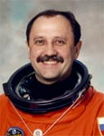

Lyndon B. Johnson Space Center
Houston, Texas 77058
|
National Aeronautics and Space Administration Lyndon B. Johnson Space Center Houston, Texas 77058 |
 |
Biographical Data |
||
Yury Vladimirovich Usachev
Cosmonaut. Resides in Star City.
PERSONAL DATA: Born October 9, 1957 in Donetsk, Rostov on Don Region, Russia. Married to Vera Sergeevna Usacheva (nee Nazarova) of Kalingrad, Moscow region. They have one daughter, Zhenya. His mother, Anna Grigorevna Usacheva resides in Donetsk. His father is deceased. He has a brother, 5 years older, and a sister, 5 minutes older. He enjoys photography and video production.
EDUCATION: Graduated from Donetsk Public Schools in 1975. Graduated from Moscow Aviation Institute with an engineering diploma, in 1985.
HONORS: Awarded both the Hero of the Russian Federation and the Pilot/Cosmonaut medals after his first space flight in 1994. After his second flight, in 1996, he was awarded the Order of Service to the Country, Level III. He was also named a Chevalier in the French Honor Legion. NASA awarded him the NASA medal for Public Service, and the NASA Space Flight Medal.
EXPERIENCE: Upon graduation from the Aviation Institute, he went to work for Energia, participating in groups working with EVA training, future construction in space, public relations, and ergonomics. In 1989, he was appointed to the position of cosmonaut candidate at the Cosmonaut Training Center. From 1989 to 1992, he underwent a course of general space training. He was a member of the back-up crew for the Mir-13, 14 and 19 missions. From January 8, 1994 to July 9, 1994, he served as Board Engineer on Space Station Mir. From February 21 to September 2, 1996, he again served as Board Engineer on Mir-21. One month later, he and Yuri Onufrienko were joined by NASA's Shannon Lucid. He next flew on STS-101, the third Shuttle mission devoted to International Space Station (ISS) construction. More recently, he was the Commander of the Expedition-2 crew which launched on March 8, 2001 aboard STS-102 Discovery and successfully docked with the International Space Station on March 9, 2001. The Expedition-2 crew lived and worked aboard ISS for the next 163 days. They returned to Earth with the crew of STS-105 on August 22, 2001, on the Shuttle flight delivering the third Expedition crew. Altogether, Usachev has logged over 670 days in space and has participated in 6 EVAs.
AUGUST 2001